Design and Development of a Swappable Battery System for Electric Tricycles
Development and Validation of a Cost-Effective Electric Conversion Kit for Conventional Tricycles.

Development and Validation of a Cost-Effective Electric Conversion Kit for Conventional Tricycles.
As part of the Fastrac Lite Electric Tricycle Conversion Project, I led the design, simulation, validation, and fabrication of a modular swappable battery system intended to power converted electric tricycles.
The objective was to develop a safe, reliable, and cost-effective battery solution that supports battery swapping operations while meeting the energy requirements of daily tricycle transportation. The system was designed to simplify charging logistics, minimize vehicle downtime, and provide an affordable pathway for conventional tricycle operators to transition toward electric mobility.
The project involved battery sizing, drive cycle analysis, enclosure design, structural and thermal validation, fabrication, and prototype testing.
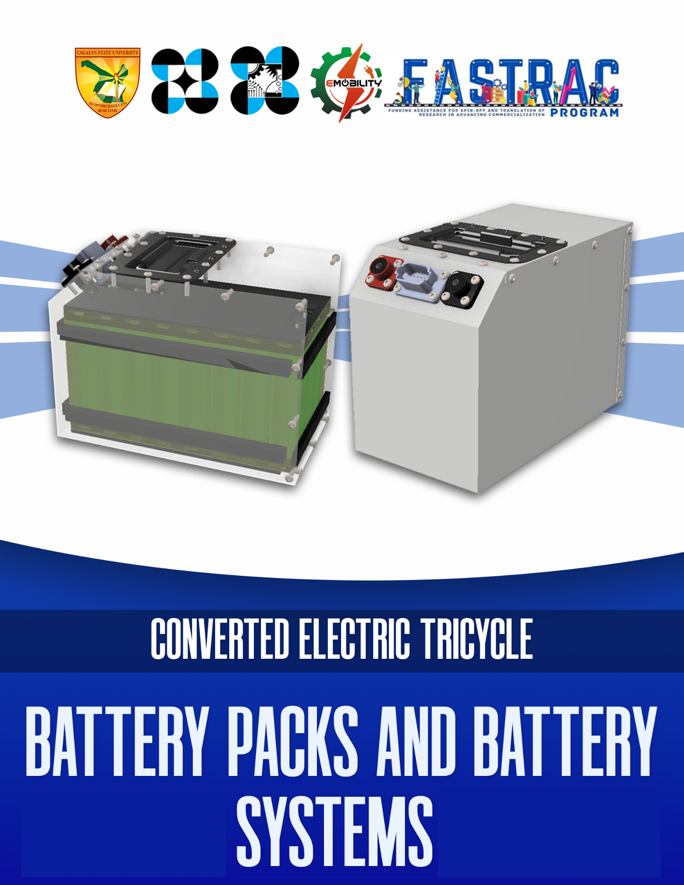
Rising fuel costs and vehicle maintenance expenses continue to affect tricycle operators throughout the Philippines. While electric vehicles offer substantial operational and environmental benefits, the high upfront cost remains a major barrier to adoption.
This project addresses this challenge by developing a practical electric conversion kit capable of transforming existing tricycles into reliable electric vehicles while maintaining safety, performance, and affordability.
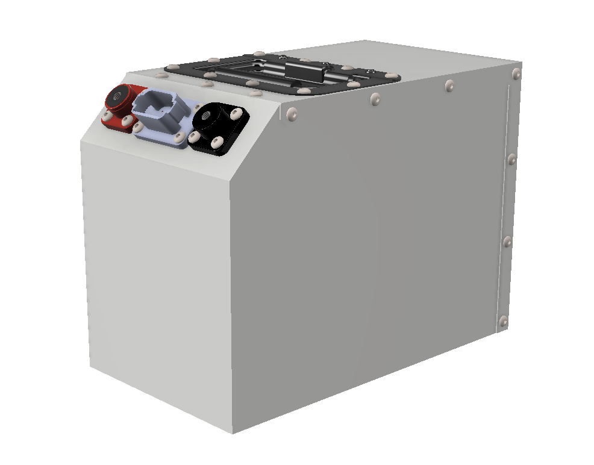
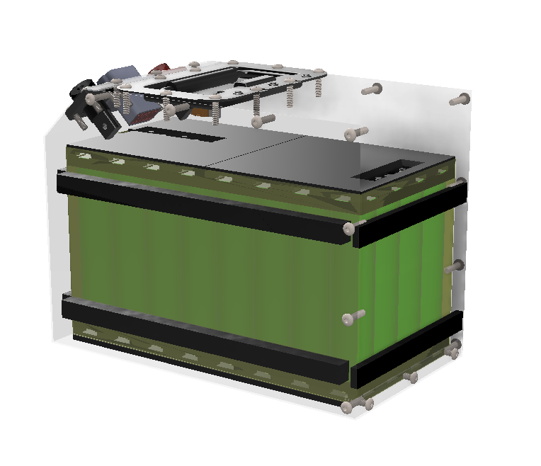
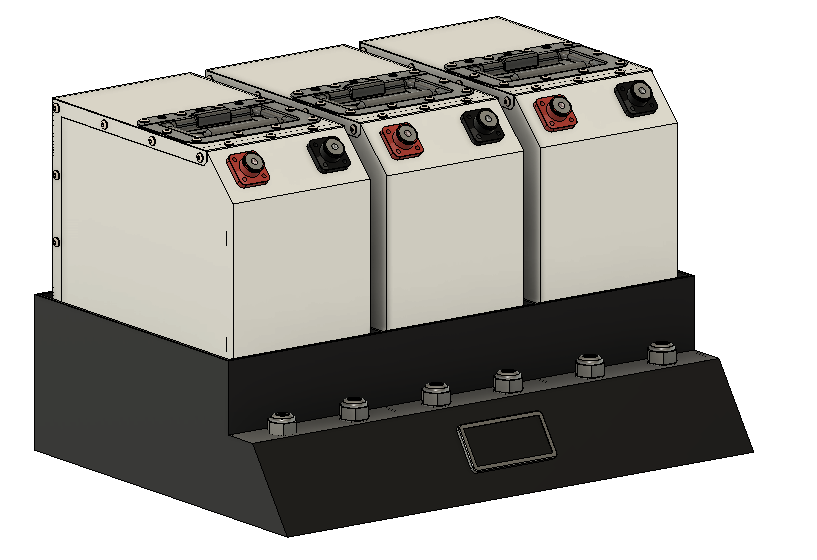
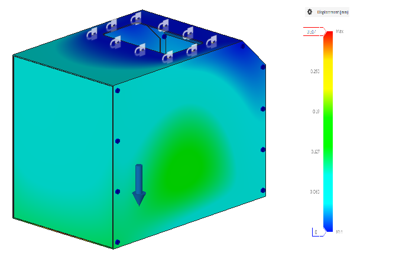
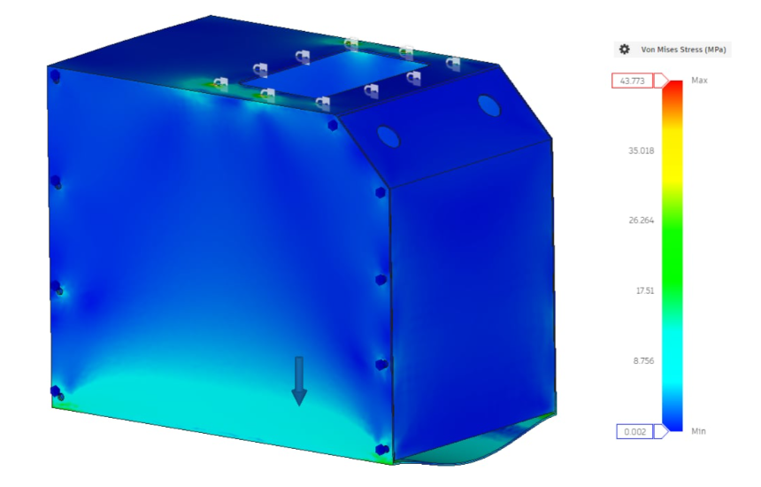
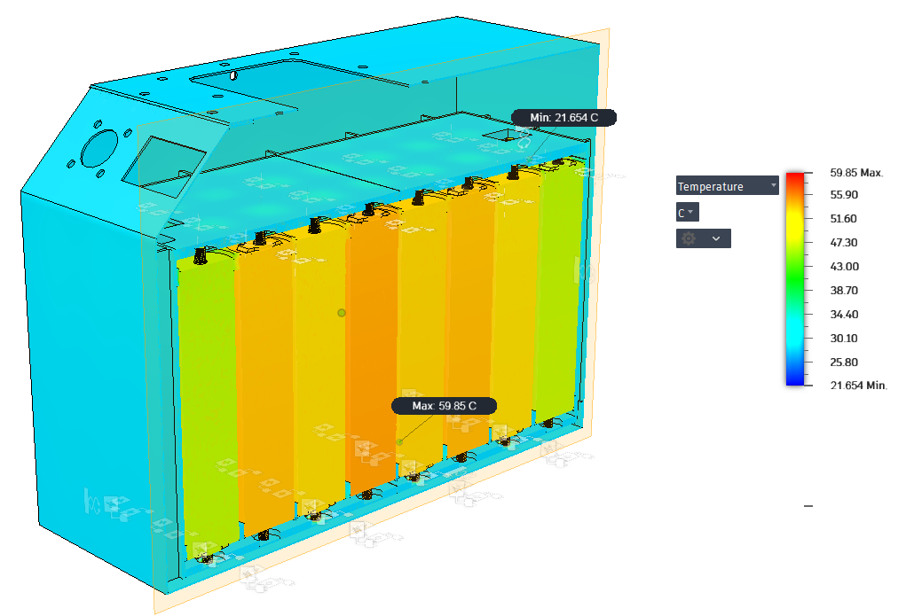
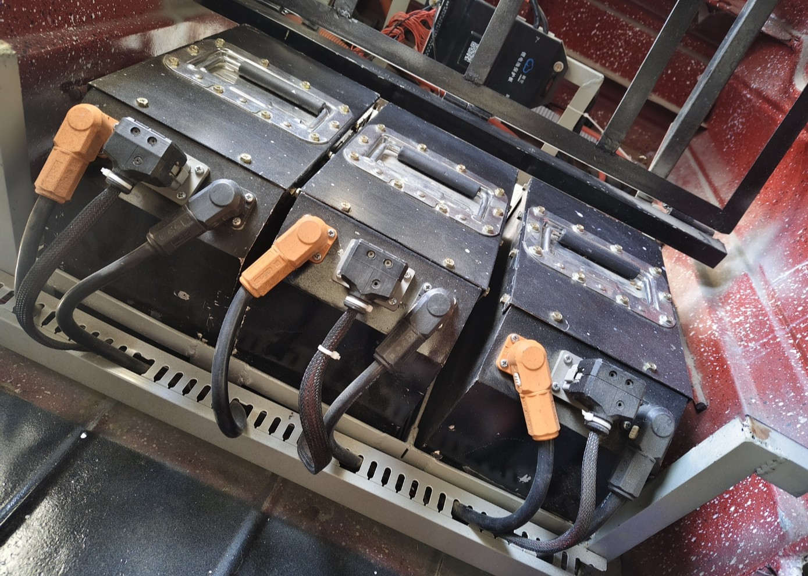
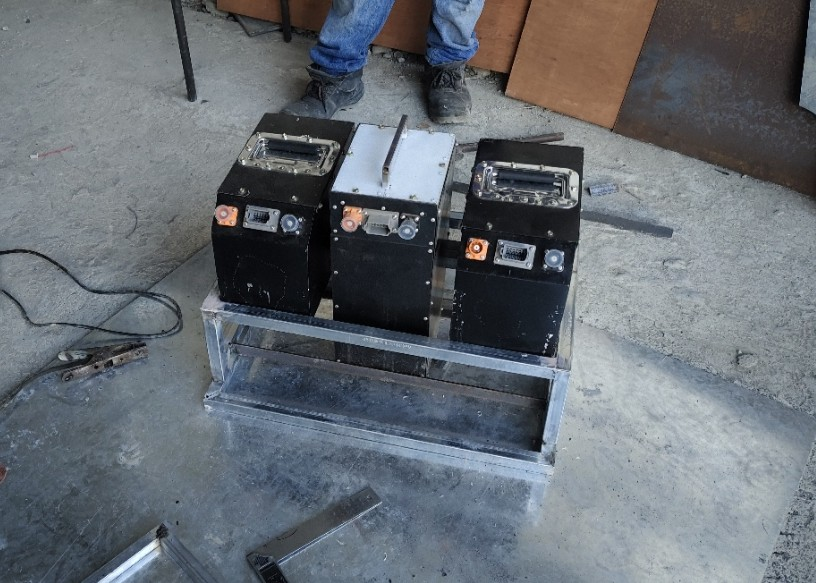
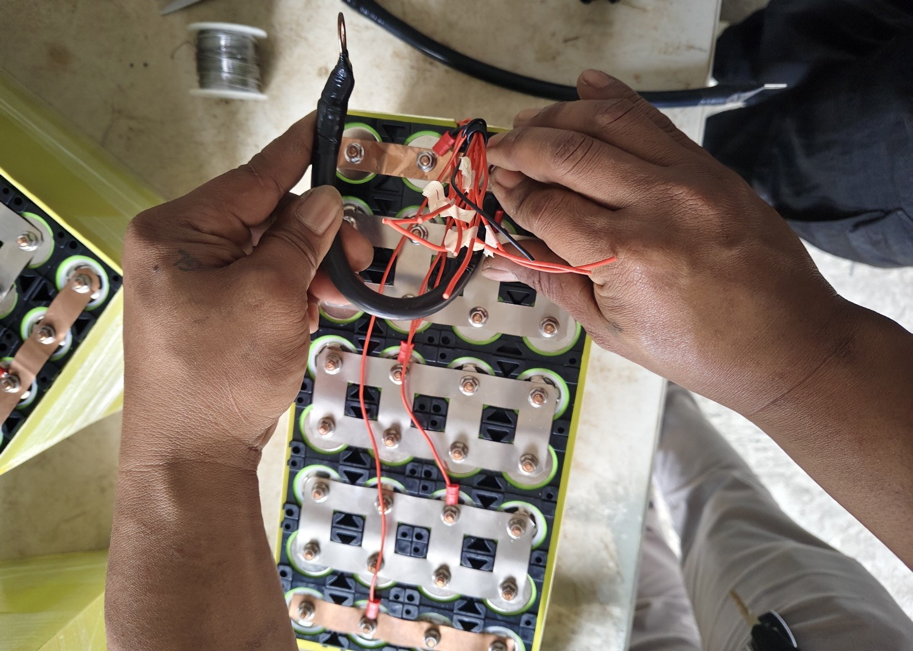
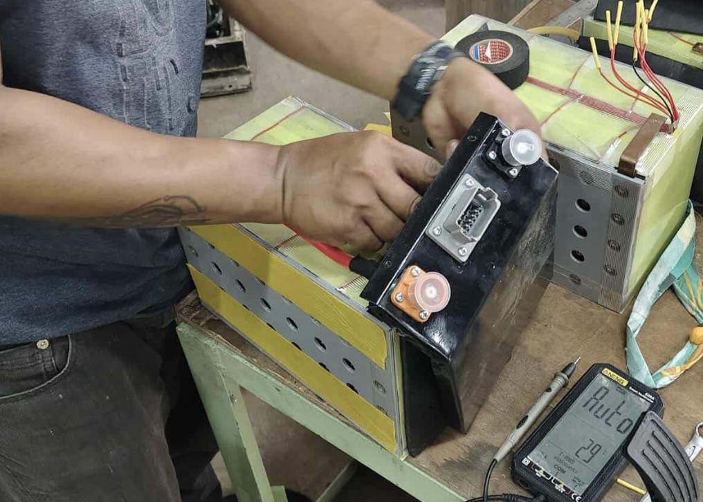
The project successfully demonstrated the feasibility of converting conventional tricycles into electric vehicles using a practical and affordable conversion kit. The developed system achieved the targeted operational requirements while maintaining safety, reliability, and manufacturability.